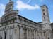

DAVID G. SIMPSON
Personal Web Site
ITALY PHOTO ALBUM: PAGE 4
|  Another view of the San Michele in Foro basilica in Lucca. |
Statue of Giuseppe Garibaldi in front of the Teatro Comunale del Giglio in Lucca. |
|
The Duomo di San Martino, or Lucca Cathedral, showing the façade and bell tower. |
The Torre delle ore (clock tower) in Lucca. |
|
A water fountain in Lucca. Our guide told us that those who drink from the fountain will return to Lucca someday. I did take a drink from the fountain, but got sick later, so do this at your own risk. |
Back in Florence. It was common to see these "Smart Cars" around Florence and the surrounding area. They're very small—just two seats, and about the size of a golf cart. |
|
 Downtown Florence, as seen from the top of the Palazzo dei Congressi. Several of us were here for a reception with the president of the World Esperanto Association. |
Another view of Florence, from the top of the Palazzo dei Congressi. |
|
 A piano concert at the Esperanto congress. |
View from a bridge on the Arno River in Florence. |
|
One day a few of us went on a guided walking tour of the hills around Florence, organized by the Esperanto congress. Our tour guide spoke both Italian and Esperanto, and explained to us what we were seeing. Here's a tower at what I believe was a private residence of some kind. |
Our Esperanto tour group hiking along the roads among the hills outside Florence. |
{kind=link}
{kind=link}
{kind=link}
{kind=link}
{kind=link}
{kind=link}
{kind=link}
{kind=link}
{kind=link}
{kind=link}
| <<< Previous | Page 4 of 5 | Next >>> |
|---|
Contact Information
I may be contacted at: